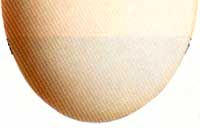
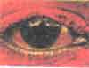
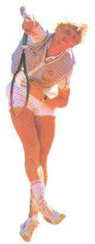
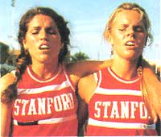

Are Eggs Okay?
They may have gotten a bad rap from the cholesterol counters.
By KATHRYN KLEINMAN
May/June 1988
When it concerns the fitness of body, mind or spirit, the editors at American Health are there, staying on top of up-to-date medical research, separating fads from facts, and helping you preserve and improve life's most precious gift-your good health. Here are just a few items culled from recent and upcoming issues, including the continuing eggs/cholesterol controversy.
Eggs are one of nature's most economical and nutritious foods. At 80 calories, one egg has about as much fat as an ounce of mozzarella cheese-and egg fat is less saturated. It also provides six grams of high-quality protein (more than 10% of the daily requirement) and good amounts of vitamins A, D and B-12 and iron. But that same egg also provides about 275 milligrams of cholesterol, close to the 300 milligram limit recommended by the American Heart Association for an entire day. The concern is that eating too much cholesterol will raise blood cholesterol-a known risk factor for heart disease.
Recent research, however, suggests that the amount of cholesterol in the diet may be less important than the amount of total fat and saturated fat. Eating eggs, for example, doesn't always increase blood cholesterol, and taking them away doesn't always lower it. Many people compensate for added cholesterol in the diet by making less in their bodies. (About four-fifths of the cholesterol in our blood is made internally, and only about a quarter to a third of healthy people respond to excess dietary cholesterol with increased levels in the blood.)
Saturated fat and cholesterol are usually lumped together because they occur together in so many foods. For example, three ounces of lean ground chuck has about 87 milligrams of cholesterol, but beef fat is about 50% saturated-more than chicken and much more than fish. Eggs, on the other hand, contribute 10% to 30% of our dietary cholesterol, but only 2% to 4% of our dietary fat. That makes eggs one of the few high-quality proteins that are moderately low in fat-and calories. And, depending on what else you eat, those benefits can offset the danger of cholesterol in eggs.
"Excluding eggs is the least effective way of dealing with a high cholesterol level," says University of Arizona nutrition researcher Dr. Donald McNamara.
Not everyone agrees, however, that moderate egg eating is safe for healthy people. A test at the University of Missouri at Columbia found that three eggs a day-21 per week-does produce a slight average increase in most people's blood cholesterol, and internist ternist John LaRosa, chairman of the AHA nutrition committee, argues that any increase in serum cholesterol increases the risk of heart disease.
The best cholesterol-lowering advice seems to be to reduce the fat and saturated fat in your diet, to add fiber-rich plant foods such as oats, beans and carrots-and to get some exercise. Regular aerobic exercise raises heart-healthy HDL cholesterol quite effectively.
The color red may increase your strength and quickness-but only temporarily.
When Kathleen Seabe, head of research for Mother Earth News, was a small child encountering some tough neighborhood kids in Philadelphia, her brother, Joe, would encourage her to fight them off with the shout, "See red, Kay! See red!" This seemingly magical mantra, she recalls, would turn her into a raging little dynamo able to deal with bullies twice her size. Now we know why.
In a study at the University of Texas Medical Branch at Galveston, 14 subjects viewed four different stimuli for 10 seconds: un-filtered light (control), darkness, red light and blue light. They then did a maximal handgrip strength test for three seconds while continuing to look at the light. Six minutes of recovery in darkness followed each viewing. Then the tests were repeated on three successive days in randomized light sequences.
Result: Viewing red light increased strength 13.5% compared with the other stimuli. Red viewing also elicited 5.8% more electrical activity in arm muscles (which leads to quicker, more explosive movements) than the other options. Red, it seems, excites the brain and the rest of the nervous system.
Past studies of hospital patients with tremors showed high-frequency red light worsened their condition. Blue, on the other hand, calmed them.
But don't think wearing rose-colored glasses will improve your next tennis match. Your body quickly adjusts to the red stimulus, and then red's dead as a strength booster.
Exercise Addicts
Seventy-five percent of people who do regular aerobic exercise may be addicted. That's not necessarily a negative, says Dr. Connie Chan, an assistant professor of human services at the University of Massachusetts in Boston. If you answer yes to three or more of these questions, you may be addicted- positively or negatively-to exercise. 1) Do you need exercise on a daily, or near daily, basis? 2) When you're unable to exercise for several days, do you become irritable, anxious, guilty or tense? 3) During a nonexercising period, do you ever suffer from depression, insomnia, weight loss or gain, lack of interest in other activities, loss of self-confidence or overall mood disturbances?
4) Do you exercise even through a physical injury, such as a sprained ankle?
5) Do you organize your life around exercise and exercise-related activities?
6) Do you place exercise above work or family obligations?
If you're obsessive, Chan suggests cutting back slowly by, for example, reducing your running mileage or skipping exercise for at least one day a week. Also develop alternative means of coping, such as taking a language class or joining a volunteer group, so that you don't depend on exercise to fill all your physical, emotional and social needs. It's also a good idea to cross-train, so you can switch to another, less stressful, activity when injuries, weather or other factors interfere, and-if you suffer severe withdrawal symptoms-consider seeking psychological help.

KATHRYN KLEINMAN
Can you get hooked on exercise?
|

PETER TURNER/IMAGE BANK
|

VANDYSTADT/ALL-SPORT
|

STEVEN E. SUTTON/DUOMO
|
|
|